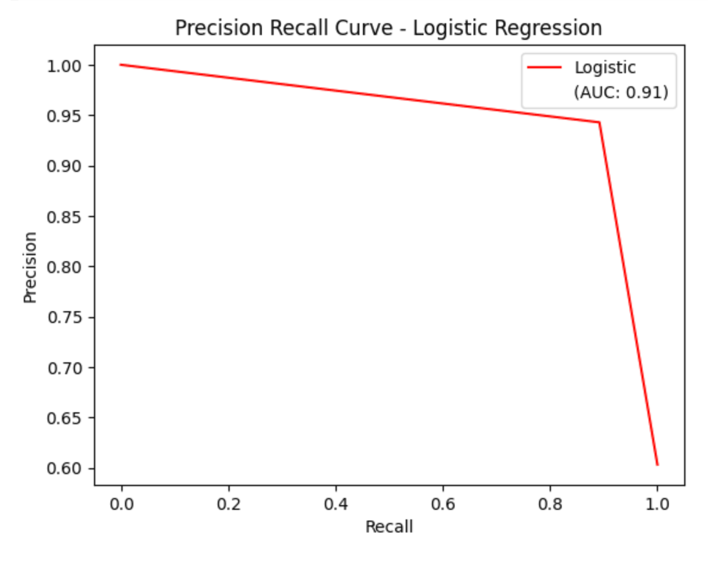

.png)
ü§† About Me
Hi! My name is Cyrus Navasca, and I am a third-year student studying Statistics, Data Science and Math at UC Santa Barbara. Through my comprehensive academic involvement, as well as my experiences as a Data Analytics Intern for Daily Nexus and as President of the UCSB Data Science Collaborative, I have built a strong foundation of both technical and interpersonal skills that I am excited to expand upon!
I have become proficient in Python, R, SQL and Tableau through various projects which made me fall in love with the process of data analysis, visualization and machine learning. Outside of work, I like watching football (go Niners!), playing card games, and trying new coffee shops.
Using data to tackle real-world problems is something that I am extremely looking forward to as I continue my journey in this field. My relentless work ethic and energetic personality are qualities that will allow me to succeed, no matter the setting, and I am ecstatic to apply myself in a team environment!
I can be reached at cyrusnavasca@ucsb.edu, feel free to reach out and I am excited to hear from you all!
üìù Resume
test
üìö Education
University of California, Santa Barbara | Santa Barbara, CA
B.S. in Statistics & Data Science, Minor in Mathematics
3.72 GPA | Dean’s Honor Roll
üíº Experiences
Data Analytics Intern @ Daily Nexus
Daily Nexus is the official university newspaper for UC Santa Barbara. As a Data Analytics Intern, I am responsible for collecting, cleaning and reporting data. Specifically, my goal is to tell stories from messy data which are relevant to my surrounding community.
Recently, I have completed my first piece at the Daily Nexus, which was an analysis on the relationship between Rate My Professors ratings and student GPAs at UC Santa Barbara. To interact with my dashboard, click the button below!

President @ UCSB Data Science Collaborative
The UCSB Data Science Collaborative aims to make the field of data science accessible to new students and non-majors. During my time as President, I have mentored over 150 members and organized engaging networking events. I have also taught workshops in topics such as data visualization, cleaning and machine learning, equipped with engaging presentation slides, and practice worksheets using sample datasets.
Being able to support new and ambitious students has been an extremely fulfilling experience. Additionally, I have learned so much from by breaking complex concepts into digestible pieces for members. This experience is one that has both reinforced my technical expertise and enhanced my interpersonal skills. Our website can be found below where you can find club photos along with my workshop presentations and worksheets!

Research Analytics Asisstant @ META Lab
In my most recent project with META Lab, I helped analyze data to examine whether reduction in functional fixedness leads to an increase in curiosity. I used statistical tests such as independent t-tests and Cohen’s Kappa in my analysis along with various data wrangling methods such as data merging and pivoting to streamline analysis.

üìä Projects
Predicting Credit Card Default with Neural Networks
In this project, I utilized PyTorch to construct a neural network which predicts credit card default among clients. Using various statistical techniques, model performance was improved by 140%. The final model achieved a prediction accuracy of 78% and performed well according to other evaluation metrics such as ROC-AUC and precision/recall.
The full project including code and visualizations can be found in the GitHub repository below.


2022 Diamond Price Analysis
For the following project, I implemented an in-depth regression analysis to examine what factors had an effect on diamond prices in 2022. I conducted feature selection, polynomial transformation and identification of unusual observations to obtain the final model. We ultimately found that carat, clarity and color had statistically significant effects on 2022 diamond prices.
Interactive Dashboard of San Francisco Police Reports
This project utilized data from the city/county of San Francisco to create an interactive dashboard visualizing police reports from January 2018 to August 2024. Over 800,000 observations of data were cleaned in Python in order to provide a user-friendly, comprehensive breakdown of the data. You can interact with the dashboard by clicking the button below!

Simulation Study of ANOVA
In this study, I analyzed the performance of the ANOVA test (F-test) under various conditions. Millions of simulations were run to identify situations where the ANOVA test performed well, and other situations where a permutation test may be better used. The full project can be found below which contains an in-depth description of the ANOVA test and visualization to support the study.
Predictive Modeling of Heart Disease
In my introductory machine learning project, I implemented Random Forest and Logistic Regression models to predict heart disease among patients. This was my first dive into machine learning and taught me how to choose a model, conduct basic exploratory data analysis, and evaluate models.
